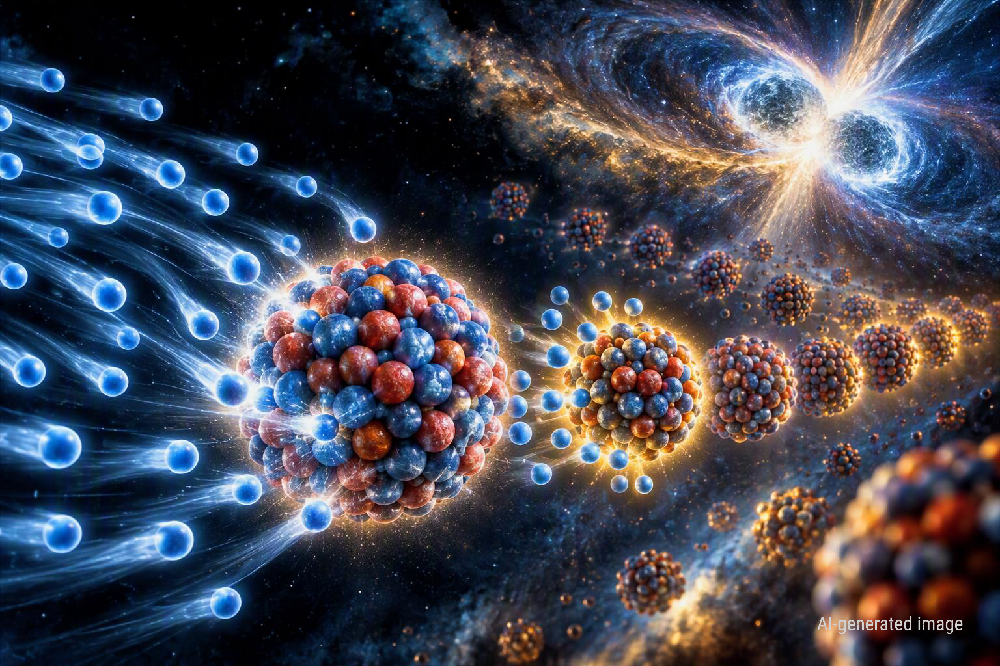

Πώς η Πυρηνική Φυσική φωτίζει την προέλευση των βαρέων στοιχείων
Νέοι υπολογισμοί των μαζών εξαιρετικά πλούσιων σε νετρόνια πυρήνων δείχνουν πώς λεπτομέρειες της πυρηνικής δομής μπορούν να αλλάξουν την πορεία σχηματισμού των βαρέων στοιχείων στο Σύμπαν.

Πολλά από τα βαριά στοιχεία που συναντάμε στη φύση δεν μπορούν να σχηματιστούν με τις συνηθισμένες πυρηνικές αντιδράσεις στο εσωτερικό των άστρων. Περίπου η μισή κοσμική αφθονία των στοιχείων βαρύτερων από τον σίδηρο συνδέεται με την ταχεία σύλληψη νετρονίων, γνωστή ως r-process. Σε ακραία περιβάλλοντα με τεράστια πυκνότητα ελεύθερων νετρονίων, όπως αυτά που μπορούν να δημιουργηθούν κατά τη συγχώνευση αστέρων νετρονίων, οι πυρήνες συλλαμβάνουν νετρόνια ταχύτερα από όσο προλαβαίνουν να διασπαστούν μέσω β-διάσπασης. Δημιουργούνται έτσι εξαιρετικά πλούσιοι σε νετρόνια πυρήνες, πολλοί από τους οποίους είναι δύσκολο ή αδύνατο να μελετηθούν σήμερα πειραματικά. Η μάζα κάθε τέτοιου πυρήνα δεν αποτελεί απλώς μια αριθμητική λεπτομέρεια: επηρεάζει τις ενέργειες διαχωρισμού των νετρονίων και, μέσω αυτών, τις αντιδράσεις που καθορίζουν την πορεία της πυρηνοσύνθεσης. Το κρίσιμο ερώτημα είναι επομένως αν μπορούμε να υπολογίσουμε αυτές τις μάζες με αρκετή ακρίβεια, ξεκινώντας όσο γίνεται πιο άμεσα από τη μικροσκοπική φυσική των πρωτονίων και των νετρονίων.
Οι J. Kuske, T. Miyagi, A. Arcones και A. Schwenk αντιμετώπισαν το πρόβλημα χρησιμοποιώντας ab initio υπολογισμούς, δηλαδή υπολογισμούς που επιχειρούν να περιγράψουν τους πυρήνες με βάση τις θεμελιώδεις αλληλεπιδράσεις μεταξύ των νουκλεονίων και ελεγχόμενες προσεγγίσεις του κβαντικού προβλήματος πολλών σωμάτων. Με τη μέθοδο VS-IMSRG υπολόγισαν μάζες για 70 ισότοπα παλλαδίου, αργύρου, καδμίου, ινδίου και κασσιτέρου γύρω από το κλείσιμο πυρηνικού φλοιού N=82. Στη συνέχεια ενσωμάτωσαν αυτές τις μάζες σε δίκτυα πυρηνικών αντιδράσεων και εξέτασαν διαφορετικά αστροφυσικά σενάρια. Στις προσομοιώσεις συγχώνευσης αστέρων νετρονίων, οι νέες μάζες ενισχύουν ένα σημείο όπου η πορεία της πυρηνοσύνθεσης επιβραδύνεται και συσσωρεύεται ύλη. Για την αντιπροσωπευτική τροχιά που εξέτασαν, οι υπολογιζόμενες αφθονίες γύρω από τη δεύτερη κορυφή της r-process, κοντά σε μαζικό αριθμό A=132, γίνονται περίπου 2 έως 3 φορές μεγαλύτερες. Η ομάδα επανέλαβε επίσης τον υπολογισμό για 11.218 τροχιές εκτινασσόμενης ύλης από προσομοίωση συγχώνευσης αστέρων νετρονίων και βρήκε παρόμοια επίδραση.
Το σημαντικό αποτέλεσμα είναι ότι ακριβέστερη θεωρητική γνώση της δομής μεμονωμένων πυρήνων μπορεί να μεταβάλει την προβλεπόμενη παραγωγή στοιχείων σε ένα αστροφυσικό γεγονός. Οι υπολογισμένες μάζες επιβραδύνουν τη ροή της r-process γύρω από το N=86, καθυστερώντας το λεγόμενο freeze-out, δηλαδή τη φάση κατά την οποία η ταχεία σύλληψη νετρονίων παύει να κυριαρχεί. Έτσι παραμένουν διαθέσιμα περισσότερα νετρόνια για μεταγενέστερες συλλήψεις και η τρίτη κορυφή των υπολογιζόμενων αφθονιών μετατοπίζεται προς μεγαλύτερους μαζικούς αριθμούς. Το αποτέλεσμα δεν είναι όμως ανεξάρτητο από το αστροφυσικό περιβάλλον: σε ορισμένα από τα ακραία σενάρια που εξέτασαν οι ερευνητές, η επίδραση των νέων μαζών είναι μικρότερη. Παραμένουν επίσης θεωρητικές αβεβαιότητες στους υπολογισμούς πολλών σωμάτων, ενώ οι συγγραφείς επισημαίνουν ότι μελλοντικές εργασίες πρέπει να επεκταθούν σε περισσότερους πυρήνες και να συμπεριλάβουν με συνεπή τρόπο και τις β-διασπάσεις. Παρ' όλα αυτά, η μελέτη δείχνει ότι οι σύγχρονες ab initio μέθοδοι μπορούν να συνδέσουν τη μικροσκοπική Πυρηνική Φυσική με ένα από τα μεγαλύτερα ερωτήματα της Αστροφυσικής: πώς δημιουργήθηκαν τα βαριά στοιχεία του Σύμπαντος. Δείτε την πρωτότυπη επιστημονική δημοσίευση